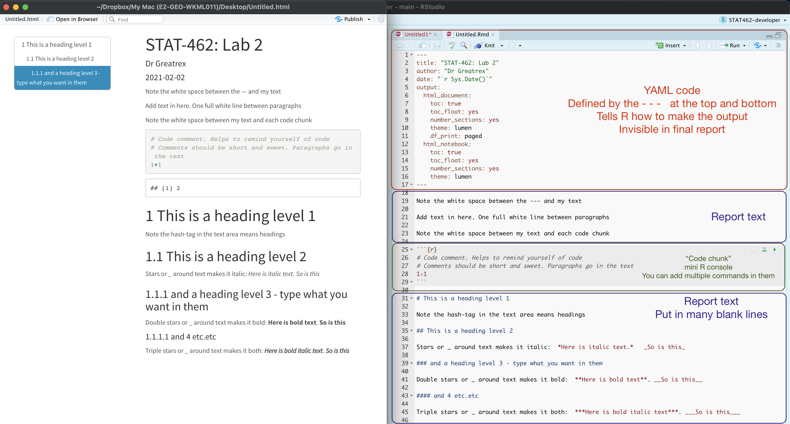

In this tutorial we are going to cover setting up each lab. This
involves making projects, packages and R Markdown documents.
Starting a new lab
About Projects
In this class, we will be using R-Projects:
- On Rstudio cloud, this is how you set up each lab.
- On the desktop, this is a folder that will store everything to do
with each lab in one place on your computer. Each lab will be its own
project.
This is incredibly useful - it means that if you switch from R-Cloud,
to the lab computers, to your laptop, all you have to do is to move the
folder and everything will just work. Equally, its easy to compare
labs.
Learn more here.

We will cover how to make projects for R studio cloud and desktop in
the set up below.
Projects using Desktop
Everything should now be installed. If not, go back to Tutorial
2.

IMPORTANT! If you haven’t already, on an easy to access place on
your computer, make a folder called GEOG364. This is where ALL your labs
are going to live.
Now everything is installed, open R-studio (NOT R!).
Steps 3-7 are shown graphically in the figure below.
- Go to the Main File menu at the very top left and click
New Project
- Select
New Directory, then
New Project
- Name your project GEOG364-Lab1-PROJECT (or whatever lab it
us)
- Under “create project as a subdirectory of”, hit the browse button
and find your GEOG364 folder (you just need to be in the folder, you
don’t need to have selected anything). Press open
- Finally, press
Create Project

How to check you are in a project
R will change slightly. If you look at the top of the screen in the
title bar, it should say something like GEOG364-Lab1-PROJECT - R
Studio.
The Files tab should have gone to your project folder. Essentially,
R-Studio is now “looking” inside your Lab 1 folder, making it easier to
find your data and output your results.
If you want one, final check, try typing this into the console
(INCLUDING THE EMPTY PARANTHESES/BRACKETS), press enter and see if it
prints out the location of Lab 1 on your computer. If not, talk to an
instructor.
Returning to your lab project
OK, let’s imagine that you get halfway through your lab and your
computer dies. How do you get back to your Lab work? Try this now. Close
down R-Studio.
To reopen a lab:
DO NOT RE-OPEN R-STUDIO!
Instead navigate on your computer to your
GEOG364/GEOG364-Lab1-PROJECT folder.
Double click on the GEOG364-Lab1-PROJECT.RProj
file.
This will reopen R for that specific lab, so you can continue where
you left off. It means you can also open several versions of R studio
for multiple labs, which can be very useful in staying sane

Projects using Rstudio/posit Cloud
Go to this webpage. https://login.posit.cloud/login You can get here from
any web-browser, You do not need a special computer.
When you log in, you should see a dashboard like this.
YOU SHOULD MAKE A NEW PROJECT FOR EACH LAB.
You make a new project by clicking the button on the top right. You
can open different projects in different tabs on your browser. You can
also go back to the work-space at any time.
Downloading files or switching to desktop
Let’s say you want to switch to the desktop but save your progress.
Or you want to submit your work to Canvas!
To switch to desktop, download/install the desktop version using the
tutorials here. Then make a new project using the instructions
above.
Either way:
On the R-Studio Cloud website; inside your project, go to the
files tab (next to Projects/Help in one quadrant. You will see a list of
files, one with the file type .Rmd (your code) and one with .html(the
website you made when you pressed knit). Look at the red circle in the
pic below
Click the check-box to the left of the .RmD file
Look just above at the Files quadrant settings menu. Click the
blue “more” cogwheel icon. (see diagram). You might need to make
R-Studio full screen to see it, it cuts off if the window is too
small.
Now click Export This will download the file
REPEAT FOR THE HTML (you can do them together but it exports as a
zip)
Submit both files on Canvas or put them in your project
file.
Uploading files
Sometimes you want to put your code into R-Studio Cloud, for example
if for one week you don’t want to bring your laptop.
Make a project for the lab on the cloud as above, then click the
upload button inside your project in the files tab and
upload your files. You will only need the .RmD file and any data
files.
The RStudio screen
You will be greeted by three panels:
- The interactive R console (entire left)
- Environment/History (tabbed in upper right)
- Files/Plots/Packages/Help/Viewer (tabbed in lower right)

If you wish to learn more about what these windows do, have a look at
this resource, from the Pirates Guide to R: https://bookdown.org/ndphillips/YaRrr/the-four-rstudio-windows.html.
If you have used R before, you might see that there are variables and
plots etc already loaded. It is always good to clear these before you
start a new analysis. To do this, click the little broom symbol in your
environment tab.
Changing global options
Some of the default R settings are worth changing to make life
smoother. We do this in the main global options menu.
You only have to do this once! Follow the arrows in this figure
(sections explained below).
There are two places you might find this menu:
- Click on the tools menu button on the VERY top right of the
screen,-> Global Options OR..
- Click on the R-studio menu button on the top left of the screen,
then click Preferences.
Main options screen
On the main options screen (see figure above), I suggest:
UNCLICK “Restore most recently opened project at
startup”
UNCLICK “Restore .RData into workspace on startup”
Set “Save workspace to .RData on” exit to Never
UNCLICK “Restore previously open source documents on
startup”
Note, yours will probably show a different default working
directory.
Changing the appearance
OPTIONAL: You can also click the appearances menu item to change how
the screen looks (see the figure above). For example, maybe you
concentrate better with a dark background or with pink font.
Moving the windows around
OPTIONAL: Like me, you might find you like the different quadrants in
a different order. To change this, look at the Panes layout menu item
(you can also get here via the View menu,then
/Panes/Pane Layout) I tend to like the console to be top
left and scripts to be top right, with the plots and environment on the
bottom - but this is personal choice.
R-Packages/libraries
What are packages?
As described earlier, we program in R by typing a series of commands.
R is open source and anyone can create a new command. Over the last 20
years,tens of millions of new custom commands have been created.
Commands tend to be grouped together into collections called
Packages or Libraries (two names for the same
thing). For example, one package contains the complete works of
Shakespeare; another allows interactive website design; another allows
advanced Bayesian statistics. There is a package for literally
everything and there are now over 20,000 packages available. You can see
a selection here: https://cran.r-project.org/web/packages/available_packages_by_name.html
A close analogy is your phone: There are millions of
apps available from banking, to 50 different calendar apps. You don’t
have every app in the world installed on your phone - and you don’t have
every app you do download running at the same time. Instead you
download the apps that you think you will need (occasionally downloading
a new one on the fly) - and when you need to use an app, you click on it
to open.
This is exactly the same in R. To access the commands in a package we
need these two steps:
- ONCE ONLY: Download the package from the internet, in the way you
download an app from the app store
- EVERY TIME: Load the packages you want, like clicking an app icon to
open it.
Downloading a new package
Manually click
This is like going to the app store to get a new app. Just like you
only go to the app store once, this is a one-off for each package. NOTE!
For R studio cloud online, you might have to do this for each
project.
- Look for the quadrant with the packages tab in it.
- You will see a list of packages/apps that have already been
installed.
- Click the INSTALL button in the Packages tab menu (on the left)
- Start typing the package name and it will show up (check the include
dependencies box). Install the package.
Little yellow banner
- R will sometime tell you that you are missing a package (sometimes a
little yellow ribbon), click yes to install!
Using the console
You can also use a command to install a new package:
install.packages("bardr")
DO NOT INCLUDE ANY INSTALL.PACKAGES COMMANDS IN YOUR FINAL
SCRIPT. ALWAYS TYPE/RUN THIS COMMAND IN THE CONSOLE WINDOW. The
command means “go to the app store” and download a package. You don’t
want to do this when pressing knit.
PRACTICE FOR YOU
Please install the rmdformats package onto your computer/the cloud.
You will need this in the nest step.
Problem solving
Why isn’t my package downloading? Its frozen
Sometimes R will ask you if you want to install binaries or other
things. IT WILL ASK YOU THIS QUESTION THROUGH “SPEAKING” IN THE CONSOLE.
It expects you to type yes or no, and to press enter to continue. Try
yes, if it doesn’t work (esp xfun), try no.
R keeps asking to restart.
Sometimes R-Studio might want to restart when downloading packages
and occasionally gets confused. If it keeps asking, press cancel, close
R-studio, reopen and try again. If it really doesn’t want to work, open
the R program itself and run in the console there (or talk to Dr G)
Loading/Using the commands inside a package
Just as going to the app store doesn’t check your credit-card balance
or make an Instagram post, simply downloading a package from
the app-store doesn’t make the commands immediately available. For that
you need to load it (just as you click on a phone app to open it).
I will tell you which packages you need for each lab, but if
R tells you it wants a package, then install it AND load
it.
This can be done with the library() command.
For example, this command loads the full works of Shakespeare from
the the bardr package. (https://www.rdocumentation.org/packages/bardr/versions/0.0.9).
If you want to try this, you might need to first install bardr using the
instructions above.
Using a single command from a package
ADVANCED: Sometimes several packages name a command the same word and
you want to specify which package you want to use.
You can do this using the :: symbol. For example, this command
forces the computer to use the ‘dplyr package’ version of
filter.
Problem Solving
Nothing happened!
If you have managed to load a package successfully, often nothing
happens - this is great! It means it loaded the package without
errors.
There was a load of text output - an error?
Hard to tell. So I suggest running the library command TWICE! This is
because many packages will print “friendly messages” or “welcome text”
the first time you load them.
For example, this is what shows up when you install the tidyverse
package. The welcome text is indicating the sub-packages that tidyverse
downloaded and also that some commands now have a different meaning.
To find out if what you are seeing is a friendly message or
an error, run the command again. If you run it a second time and and
nothing happens, then you’re fine.
Creating a Markdown document
This will be your lab report. Remind yourself of what Rmarkdown is
using Tutorial 1, here https://rmarkdown.rstudio.com, or via this short
video
Templates
In the past, you used to have to know a lot of computer commands to
get markdown documents to work. Every month it seems to get easier, and
there are now a load of professional templates available.
The ones we are going to use are from the package
rmdformats. Have a look at the templates here: https://juba.github.io/rmdformats/. If none of these
appeal, google RMarkdown templates for more.
Install the package rmdformats using the packages
tutorial above.
Making your Markdown file
Go to the File menu on the top left, then click New File -
R-Markdown. If this is your first time ever, it might
ask to download some packages to be able to do this. Say yes. Eventually
a window will open up:
Click “From Template” and select a template of your
choice. Click here to see what different templates look
like:
https://juba.github.io/rmdformats/

If you don’t see any templates, you needed to have installed the
rmdformats package (see above). There are many packages containing
different templates. You can see which package each template belongs to
below (red). You should also be running your project - so it should auto
save your file to your lab 1 folder.
It will ask you to name your file. Give it a relevant name including
your email ID, like Lab-2_hlg5155. Press OK.

A new file should appear on your screen.

Essentially, we have some space for text, some space for code, and a
space at the top of the file where we can add information about
themes/styles etc called “YAML”.
Each grey code area is called a “code chunk”. To run the code inside
it, click the little green arrow on the top right.
Depending on the template, your file might contain some friendly text
to explain what is going on. Read through it, then you are welcome to
delete it from the after the lower — onwards.

THREE IMPORTANT BUTTONS - READ THIS
Visual mode
It is MUCH easier to edit markdown documents in the new visual mode.
Essentially instead of having to remember text short cuts like * for
bold, you can edit the text part as though you were using a word
processor. NOTE HEADERS where it says “Normal”, this allows you to make
auto tables of contents.

Creating a new code chunk.
Code chunks are mini consoles where you can run R commands. We will
talk more about them in the next tutorial.

On the top right there are a suite of buttons for adding a new code
chunk, running code etc. The green one adds a new code chunk. To run an
individual code chunk you will press the green arrow on its top right
e.g.

Knitting
The file on your screen isn’t the finished article. To see how it
will look as a final version, we need to “knit” it. Go to the top of the
.Rmd file, find the knit button. Press it (you might have
to first save your script if you haven’t already, then press it
again)
You should see that the Markdown tab “builds” your document and you
get an output as a website. The html should also be saved into your
project folder.
For example, from my other class, here is a file with markdown and
knitted output.
